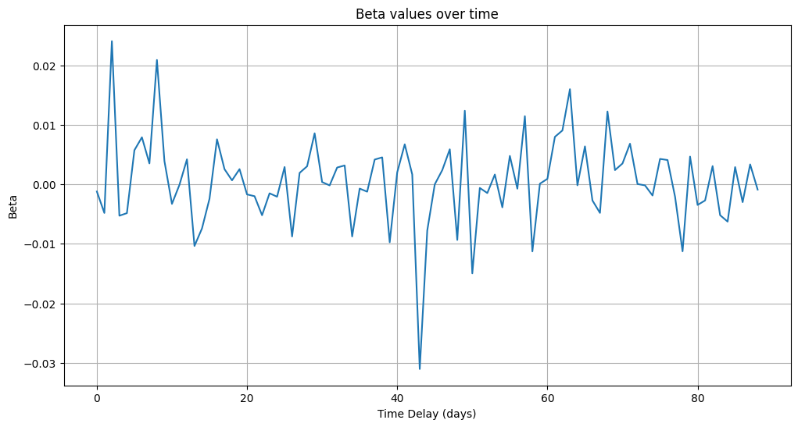

The Effects of a Restrictive Monetary Policy on Risky Firms in Capital Market Theory
An Explanatory Study on the German Financial Market
Gianmarco Corradini, MS — 2023
Abstract
This paper investigates the theoretical and empirical relationship between restrictive monetary policy and the performance of risky firms within the framework of Capital Market Theory. Building upon Markowitz's portfolio model, we explore whether an increase in the risk-free rate shifts the market portfolio towards higher risk and return, both in the short and long run. Using data from the German financial market between July 2022 and July 2025, we test the transmission of monetary policy to government bond yields, and subsequently, to the DAX40 index as a proxy for the market portfolio. Empirical analysis, based on time-lagged correlations and regression models, shows no significant link between changes in ECB interest rates and the risk or return of the German equity market. The results highlight the limitations of Capital Market Theory in capturing the dynamics of monetary policy transmission, suggesting that alternative mechanisms such as expectations and macroeconomic fundamentals may play a more prominent role.
Introduction
The purpose of this article is to test the theoretical implications of Capital Market Theory concerning the effects of a restrictive monetary policy. Specifically, three research questions guide this study:
Does a restrictive monetary policy reduce the risk of the market portfolio?
If so, do the short-run effects persist in the long run?
If not, what are the long-run implications for the market portfolio?
Method
The theoretical foundation and starting point of the following discussion is the model known as the "Capital Market Theory," also referred to as the "Markowitz Bullet" (Markowitz, 1952). In brief, the market is composed of \(N\) assets which are combined to form each portfolio, based on the risk-return trade-off.
Where \(M\) is the set of all assets available in the market, \(w\) the weights, and \(E(\cdot)\), \(Var(\cdot)\), \(Covar(\cdot,\cdot)\) are respectively the expected value, variance, and covariance.
The first hypothesis tests whether monetary policy transmits directly to government bond yields.
Correlation between ECB policy rates and German bond ETF returns.
Market Portfolio Returns
Correlation between ECB policy rates and DAX40 returns.
Market Portfolio Risk
Market portfolio volatility (30-day rolling window) in relation to ECB policy changes.
Robustness Checks

Additional regression diagnostics.
Alternative lag structures.
Residual-based robustness check.
Discussion
The empirical results challenge the predictions of Capital Market Theory regarding the transmission of monetary policy to financial markets. Despite the theoretical expectation that higher interest rates shift the market portfolio towards higher risk and return, the German data provide no evidence of such effects.
Several explanations may account for this outcome. First, monetary policy transmission channels are more complex than those captured by the Markowitz framework, involving expectations, international spillovers, and heterogeneous sectoral responses. Second, the DAX40 may not fully represent the market portfolio, though it remains a widely accepted benchmark. Third, equity markets may be driven primarily by growth expectations and global factors, which can overshadow domestic monetary policy shocks.
Conclusion
This study examined the effects of restrictive monetary policy on risky firms within the framework of Capital Market Theory, using the German financial market as a case study. The empirical analysis, covering the period of ECB rate hikes and subsequent cuts between 2022 and 2025, found no robust correlation between monetary policy changes and the risk or return of the DAX40 index.
The findings suggest that Capital Market Theory, while valuable for theoretical insights, fails to capture the mechanisms by which monetary policy influences equity markets. Policymakers and researchers should therefore consider alternative frameworks that incorporate expectations, cross-market linkages, and macroeconomic fundamentals.